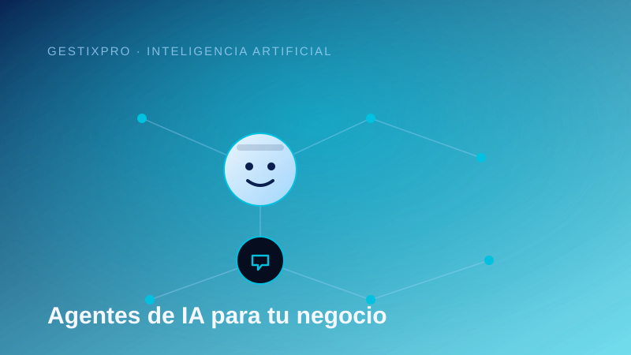

Agentes de IA: el nuevo empleado digital que todo emprendimiento y empresa chilena necesita en 2026
Desde un agente de WhatsApp que atiende y vende 24/7 hasta sistemas que automatizan procesos completos en grandes empresas: así están usando la inteligencia artificial los negocios que hoy le sacan ventaja a su competencia.

Hasta hace poco, hablar de "inteligencia artificial en el negocio" sonaba a ciencia ficción para la mayoría de los emprendedores chilenos. Hoy es exactamente lo contrario: un agente de IA bien implementado es una de las inversiones con retorno más rápido que puede hacer un negocio, sin importar si se trata de un emprendimiento de una persona o de una empresa con decenas de trabajadores.
¿Qué es exactamente un agente de IA?
Un agente de IA es un asistente digital capaz de entender lenguaje natural, tomar decisiones dentro de reglas definidas y ejecutar acciones de forma autónoma: responder preguntas, agendar una cita, cotizar un producto, derivar un caso complejo a una persona o actualizar un sistema interno. A diferencia de un simple chatbot con respuestas fijas, un agente de IA entiende contexto, recuerda la conversación y puede conectarse a tus sistemas reales —inventario, calendario, CRM— para actuar, no solo para responder.
El caso más práctico: un agente de WhatsApp para tu emprendimiento
En Chile, WhatsApp es el canal donde realmente ocurren las ventas de la mayoría de los emprendimientos. El problema es que un emprendedor no puede estar disponible las 24 horas, y cada minuto de demora en responder es un cliente que se va a la competencia. Un agente de WhatsApp personalizado resuelve exactamente eso:
- Atención inmediata, todo el día: responde consultas de precios, disponibilidad y horarios en segundos, incluso a las 11 de la noche o un domingo.
- Toma pedidos y agenda citas: guía al cliente paso a paso hasta cerrar una venta o reservar una hora, sin intervención humana.
- Conoce tu negocio, no respuestas genéricas: se entrena con tu catálogo, tus precios y tu forma de hablarle a tus clientes, manteniendo la personalidad de tu marca.
- Sabe cuándo derivar a una persona: reconoce reclamos, casos complejos o clientes que prefieren hablar con un humano, y transfiere la conversación sin fricción.
- Nunca deja de aprender: cada conversación se puede revisar para detectar preguntas frecuentes y mejorar las respuestas con el tiempo.
Para un emprendedor que hoy responde manualmente cada mensaje, esto significa recuperar horas del día y, sobre todo, dejar de perder ventas por no llegar a tiempo.
En las empresas: agentes de IA que escalan operaciones completas
En empresas de mayor tamaño, el impacto de los agentes de IA va más allá de la atención al cliente. Se convierten en una capa de automatización que conecta áreas completas del negocio:
- Atención al cliente y soporte: agentes que resuelven la mayoría de las consultas de primer nivel y liberan al equipo humano para casos de mayor valor.
- Ventas y postventa: calificación automática de leads, seguimiento de cotizaciones y recordatorios de pago, sin que un vendedor tenga que hacerlo manualmente uno por uno.
- Procesos internos: agentes que revisan documentos, consolidan reportes o responden preguntas frecuentes de los propios trabajadores (RR.HH., finanzas, logística).
- Analítica en tiempo real: sistemas que detectan patrones en las conversaciones con clientes y entregan información útil para la toma de decisiones, algo imposible de hacer manualmente a gran escala.
La diferencia con un emprendimiento no es el concepto, sino la escala: una empresa mediana puede tener varios agentes especializados trabajando en paralelo, integrados entre sí y con sus sistemas existentes (ERP, CRM, plataformas de pago), funcionando como un equipo digital disponible las 24 horas.
Por qué 2026 es el momento de implementarlo
La tecnología detrás de los agentes de IA maduró al punto de ser confiable, rápida de implementar y accesible en costo —ya no requiere un equipo de desarrollo propio ni meses de trabajo. Al mismo tiempo, los clientes chilenos ya esperan respuestas inmediatas: un negocio que tarda horas en contestar un WhatsApp está, en la práctica, compitiendo en desventaja frente a otro que responde al instante gracias a un agente de IA.
En GestixPro diseñamos e implementamos agentes de IA a medida —desde un agente de WhatsApp para emprendimientos hasta soluciones de automatización más complejas para empresas— integrados a tus procesos reales para que trabajen para ti desde el primer día.